The Single-Line Plotting Assistant for ggplot2
The ggplot2 R package composes any plot from layers, aesthetics, scales, coordinates and themes. This grammar makes it flexible and precise, but it also means that creating a plot requires the knowledge of many functions and arguments: a plot of “counts per department, coloured by year” requires knowledge of geom_col(), aes(fill = ), position_dodge(), scale_fill_*() and theme(), and of the data steps that come before them.
plot2 takes the opposite approach. Like base R’s plot(), one call gives a complete plot, even when the type of plot or other details are not given. You describe what you want to see, and plot2() summarises, sorts and labels the data, and chooses the plot type, colours, axes and theme:
iris |> plot2()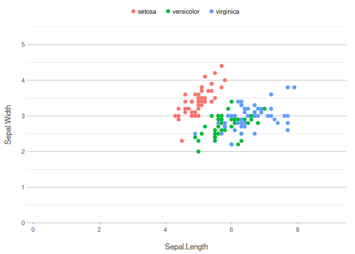
iris |> plot2(x = Species)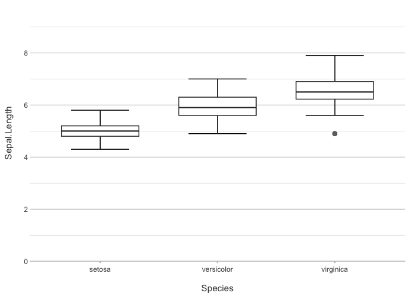
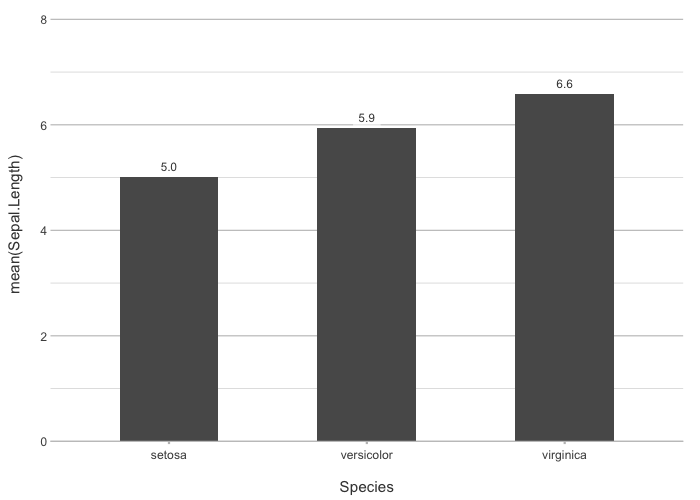
The result is a standard ggplot object, so every ggplot2 function and extension still works on it.
Plot types
plot2() supports all ggplot2 geoms, and adds plot types such as dumbbell, back-to-back, Sankey, spider and UpSet plots. Each of the 20 plots below is made with only a single line of code:
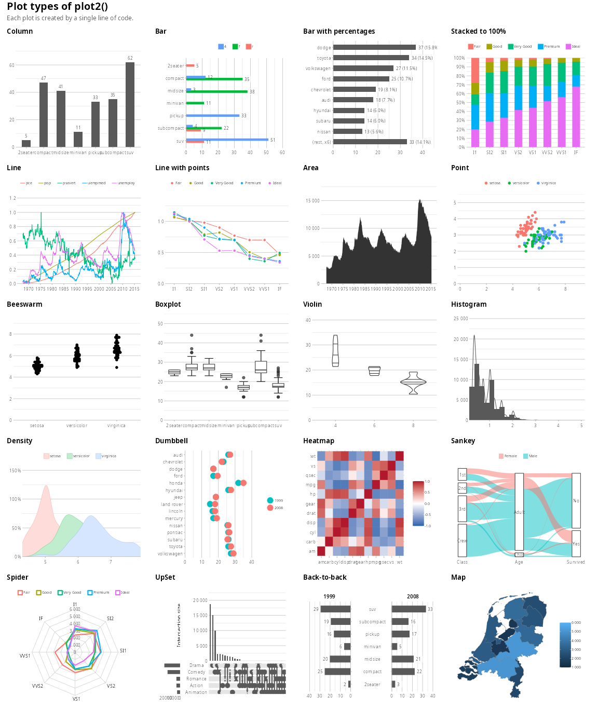
Show the code for each plot
# Column
ggplot2::mpg |> plot2(class, n())
# Bar
ggplot2::mpg |> plot2(class, n(), drv, type = "bar")
# Bar with percentages
ggplot2::mpg |> plot2(manufacturer, type = "barpercent")
# Stacked to 100%
ggplot2::diamonds |> plot2(clarity, n(), cut, stacked_fill = TRUE)
# Line
ggplot2::economics_long |> plot2(date, value01, variable)
# Line with points
ggplot2::diamonds |> plot2(clarity, median(carat), cut, type = "linedot")
# Area
ggplot2::economics |> plot2(date, unemploy, type = "area")
# Point
iris |> plot2()
# Beeswarm
iris |> plot2(Species, Sepal.Length, type = "beeswarm")
# Boxplot
ggplot2::mpg |> plot2(class, hwy)
# Violin
mtcars |> plot2(cyl, mpg, type = "violin")
# Histogram
ggplot2::diamonds |> plot2(carat)
# Density
iris |> plot2(Sepal.Length, category = Species, type = "density", colour_transparency = 0.5)
# Dumbbell
ggplot2::mpg |> plot2(manufacturer, median(hwy), year, type = "dumbbell")
# Heatmap
mtcars |> cor() |> plot2(colour = c("#2166AC", "white", "#B2182B"))
# Sankey
Titanic |> plot2(c(Class, Age, Survived), category = Sex, type = "sankey")
# Spider
ggplot2::diamonds |> plot2(clarity, median(price), cut, type = "spider")
# UpSet
ggplot2movies::movies |> plot2(c(Action, Animation, Comedy, Drama, Romance), type = "upset")
# Back-to-back
ggplot2::mpg |> plot2(class, n(), facet = year, type = "back-to-back")
# Map
netherlands |> plot2(datalabels = FALSE)Installation
plot2 is not on CRAN yet. Install it from r-universe:
install.packages("plot2", repos = c("https://msberends.r-universe.dev", "https://cloud.r-project.org"))What plot2 replaces
| Task | ggplot2 | plot2 |
|---|---|---|
| Summarise, then plot |
group_by() + summarise() + ggplot() + geom_col()
|
plot2(x = a, y = mean(b)) |
| Sort bars | mutate(fct_reorder(...)) |
x.sort = "freq-desc" |
| Group by colour |
aes(fill = var) for bars, aes(colour = var) for points, each with its own scale_*()
|
category = var |
| Set colours |
scale_fill_manual(values = ...) or scale_colour_manual(values = ...), depending on the geom |
colour = c(...) |
| Facet | + facet_wrap(~var) |
facet = var |
| Data labels | + geom_text(aes(label = ...), vjust = ...) |
automatic for columns |
| Stacked bars |
geom_col(position = "stack") or position = "fill"
|
stacked = TRUE or stacked_fill = TRUE
|
plot2 compared to ggplot2
The first three pairs below start from an example in the documentation of ggplot2 (left, literally as in the help page named above it) and replace it with one plot2() call on the same data (right). The plots are not meant to look the same: the right side shows what plot2() delivers without any further code, such as sorted groups, data labels, axis titles, a clean theme, and value axes that start at zero.
The last pair goes the other way: it starts from a finished plot, with groups, facets, trend lines, a log scale and a Google Font, and shows the ggplot2 code needed to get the same result. With font, plot2() downloads the font once, and uses it only while drawing this plot; with showtext_auto(), the font handling stays switched on for every plot that follows.
ggplot2
|
plot2
|
|---|---|
From ?geom_bar
|
|
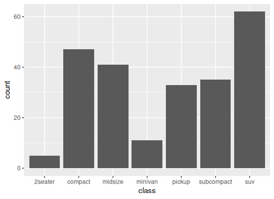 |
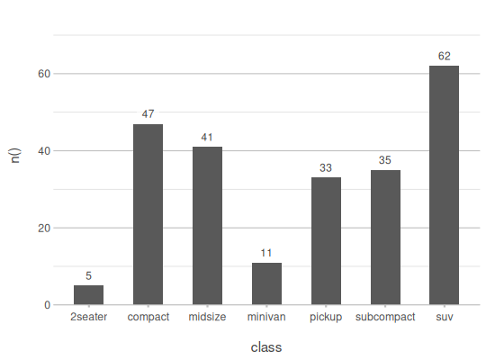 |
From ?geom_boxplot
|
|
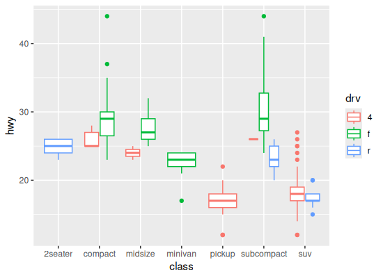 |
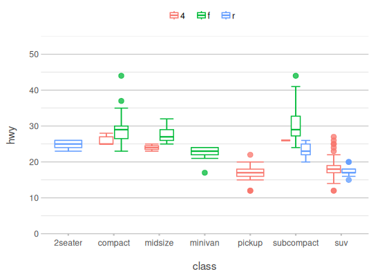 |
From ?geom_point
|
|
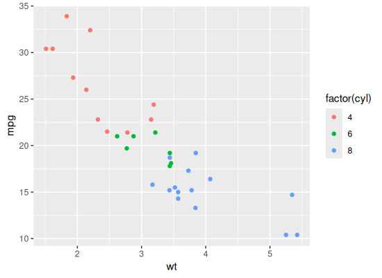 |
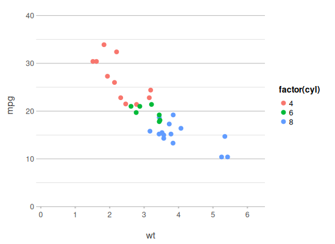 |
A finished plot: life expectancy and income per continent, in two periods, from the gapminder package
|
|
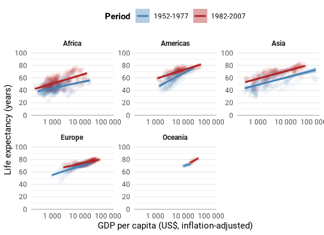 |
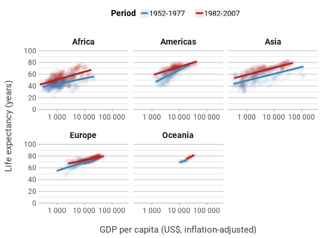 |
Every part of these plots can then be changed with one argument. All arguments are named after the plotting direction they apply to: x.*, y.*, category.* and facet.*. With plot2(), there is no need to remember argument or function names, or to look them up in the documentation. Type the direction and press Tab, and your editor lists every option for it, together with its description:
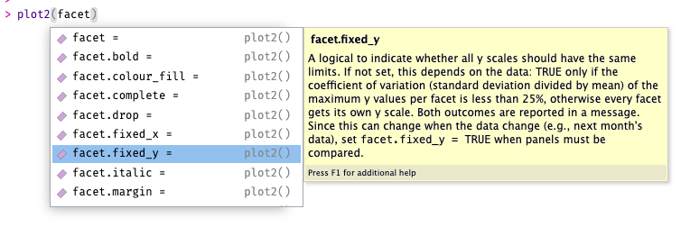
Learning more
- Introduction to plot2 describes the main ideas.
- Plot types shows every plot type.
- Colour and themes describes how to set manual/organisational style
- Fonts explains how any font can be used directly.
- Maps shows how maps can be plotted easily.
create_interactively() opens a Shiny app that builds a plot from a point-and-click interface and shows the code:
iris |> create_interactively()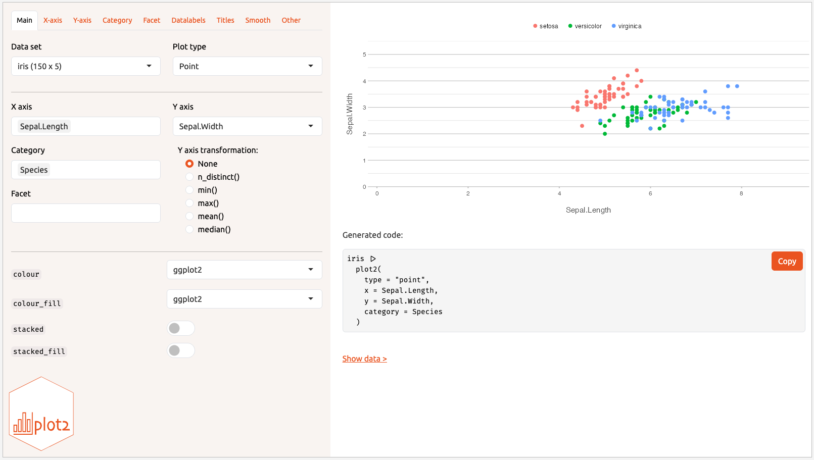
Contributing
Issues, feature requests and pull requests are welcome at https://github.com/msberends/plot2.